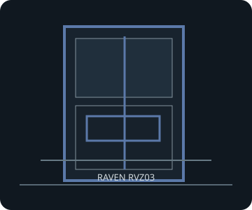

[ RAVEN RVZ03 // VERTICAL CONSOLE CHASSIS ]
SilverStone Raven RVZ03
382 × 105 × 364 mm (W × H × D), about 14.6 L; Mini-ITX/Mini-DTX with an included two-slot riser and ATX power supply support.

FITMENT CAVEAT: This record describes the named model only. Published maxima can depend on revision, brackets, fan/radiator position, PSU cable routing and drive configuration; verify the exact manual and parts before purchase or assembly.
Specifications & fit
| Exact model | SilverStone Raven RVZ03 |
|---|---|
| Motherboard sizes | Mini-ITX (170 × 170 mm) and Mini-DTX (203 × 170 mm); PCIe cards mount through the supplied riser. |
| PSU type and fit | Standard ATX/PS2, maximum 150 mm long; SilverStone recommends 140 mm for easier cable management. A modular unit with flexible/flat leads is helpful. |
| GPU length and thickness | Up to 330 mm long × 149 mm wide/high, on a two-slot riser. The published fit limit is width plus two expansion positions; no separate millimetre card-thickness figure is specified. |
| CPU cooler height | Up to 83 mm tall. Confirm fan position and orientation in the manual if using a tower-style low-profile cooler. |
| Radiator and fan options | Two 120 mm fans included (top and bottom) plus one optional 120 mm fan position. A 120 mm AIO/radiator configuration is documented; radiator, pump and fan position are installation-dependent. Do not infer support for a larger radiator. |
| Storage clearances | Up to four 2.5-inch drives. The central drive position and PSU wiring share limited volume with the GPU/riser; short modular PSU cables help. No external optical bay is listed. |
| Compatibility notes | Keep the two-slot card within the 330 × 149 mm envelope and account for the riser, ATX PSU depth and connector bends. Use the manual's 120 mm radiator layout rather than assuming all fan positions remain available. |
Compatibility & preservation notes
Keep the two-slot card within the 330 × 149 mm envelope and account for the riser, ATX PSU depth and connector bends. Use the manual's 120 mm radiator layout rather than assuming all fan positions remain available.
- Record the case model/SKU, revision, included riser, brackets and manual version before changing hardware.
- Measure the actual GPU shroud, power connectors, cooler, radiator/fan stack and cable bend radii; do not assume listed maxima can coexist.
- Keep original drive trays, standoffs, fasteners, fan brackets and panel hardware with the enclosure.
Manufacturer sources
- SilverStone — Raven RVZ03 product specificationsManufacturer card, PSU, fan, cooler and radiator limits.
- SilverStone — Raven RVZ03 manual (PDF)Manufacturer assembly and system-optimization diagrams.
Sources are manufacturer product documentation and the model-specific manual; consult the matching revision for assembly dimensions.